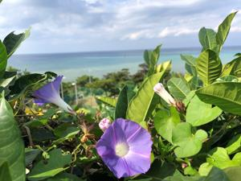
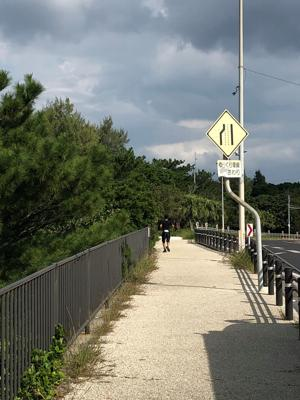
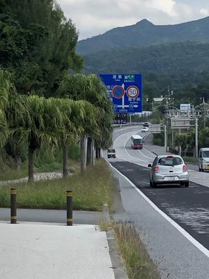
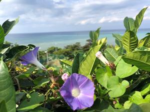
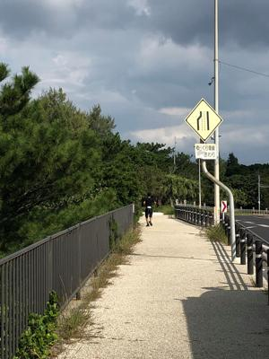
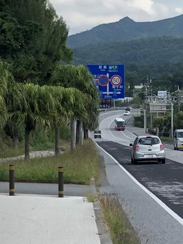

うるがいの話 ある日
最新: サポートうるがいとは 前提知識です
カニの画像をクリックすると『うるがいの話』サイトを表示します|
|
【うるがいの話】 うるがい(ｳﾙｶﾞｲ urugai)とは、『もずくがに』の名前でとても大きくなります。 |
|---|---|
|
|
【Got cat カミマヤーの話】 たながー（ﾀﾅｶﾞｰtanagaa）とは手長えびのことで、何種類かあり大きいのは車 エビぐらいになります。 |

|
【ぶながぁの話】 ぶながー(bunagaa)とは、赤い髪の毛、赤い身体、そして身長は１ｍ２０ｃｍ ぐらい、川の蟹を食べているの目撃された。場所は沖縄県国頭郡大宜味村のと ある村僕の隣近所に住んでいる爺さんから、聞いた話です。 |
|
|
【ギーマの話】 ギーマ(giima)とは、山原の里山に咲くスズランに似た、 花を付けます。実は食べられます、 気が付くと口の周りが紫になっています。 |
2021年11月17日 (水）サポート
16:07
 





ヨメのお義母さんの介護支援等級が、要支援２から支援が軽くなる要支援１に
変わる。ヨメは、前よりヨボヨボに弱っっているのに、はぁ～と言っていたが
今日は、コドモのオンラインマラソンをサポートする。コドモは朝の６時７分
におもろまちを出発、１２時過ぎにスマートフォン用ＧＰＳランニングアプリ
が示した恩納村の谷茶（たんちゃ）でゴール。記録は５時間５０分とのこと。
コドモが３０キロを過ぎた地点で私へ電話をする、私はそれから車で自動車道
路に乗り入れ屋嘉で降りる。当初ゴールはここかなと言われていたダイヤモン
ドビーチに一旦到着し、そこから５８号線を那覇向けに車を走らせる。恩納村
役場もとおり過ぎるが、いない、ん！、ん！、としばらく走らせるとゆったり
と歩くコドモがいた。観光客の車が一杯の谷茶前の浜（民謡）の碑がある駐車
場で待つ。コドモは跡２キロときつそうであるが、完走は問題ない。だいたい
２キロ先だろうとの場所で待つ。待った場所からさらに２５０メートル過ぎた
場所でゴール。車の所まで戻ってきて車に乗せる。飲み物！を、おお、どこか
自動販売機で冷えているものを・・・、ない！、コンビニなどない、共同売店
みたいな所（ａＵ Ｐａｙのメールでは利用店舗は恩納村共同組合と）に車を
とめ、とても品物が安いのに驚く。そして、缶コーラなどを買う。本物のＮＡ
ＨＡマラソンでは、自己責任で移動してね、帰りの車の中でムフと伝えた。